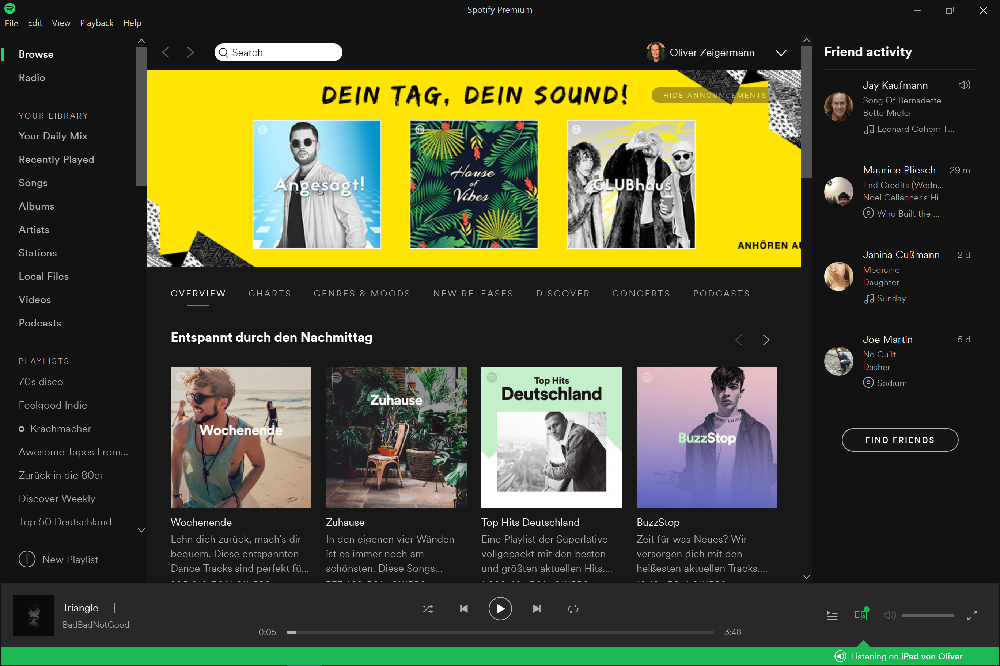

Was macht moderne (JavaScript) Frontend-Architektur so schwierig?
OOP 2018
Folien: http://bit.ly/oop-frontend
Embarc GmbH
Moderne Frontend-Architektur
Moderne Frontends ...
- haben einen hohen Anspruch an UI/UX
- sollen über lange Jahre wartbar bleiben
- sind typischerweise zu groß, um von einem einzelnen Team gewartet werden zu können
- sollen in kurzer Zeit und kostengünstig zu entwickeln sein
Axiom I
Beste UI / UX kann nur durch Single Page Applications (SPA) erreicht werden
SPAs
verschieben eure Anwendung in den Browser
- eine einzie (single) HTML Seite (Page) pro Modul
- Seite ist eher Anwendung als Inhalt
- Server nur noch Daten-Schnittstelle (JSON/REST API)
- erlaubt Offline-Betrieb (u.a. über Service Workers)
- dieselbe UI/UX wie eine Desktop App möglich
Axiom II
Wartbarkeit und Skalierung in der Größe ist nur durch Modularisierung erreichbar
Moderne Frontends...
- sollen aus einzelnen Modulen zusammensetzbar sein
- müssen zu modernen Backend-Architekturen passen
- sollen einzeln zu deployen sein
- pro Modul am besten Wahl von freie Technologie sein
Das passende Buzzword dazu ist Micro Frontends ( https://www.thoughtworks.com/radar/techniques/micro-frontends )
Widerspruch aus Axiom I und II
Wenn man die Module für Wartbarkeit entkoppelt wie bei Micro Frontends muss man wie für das konsistente UI wieder koppeln
Oder: man muss sich entscheiden, will man die beste Erfahrung für den Nutzer oder für den Entwicklungsprozess
https://twitter.com/missingcloudltd/status/826203153934729218
Teil 1
Architektonische Herausforderung
Weitere Schwierigkeit
Wir nehmen Frontend-Architektur nicht für voll
Zitate
- Frontend-Architektur: Ich dachte sowas gibt es gar nicht
- Das Frontend kloppen wir am Ende einfach irgendwie drauf
- Architektur für ein bisschen CSS-Pixel-Geschupsse?


@wycats : https://twitter.com/wycats/status/930463710941872128
Micro Frontend Architektur-Ansätze
Integration...
- über Links - Codename Links
- im Browser - Codename Micro Components
- zur Build-Zeit - Codename Majestic Modular Monoliths (Kudos an @axelfontaine für den Namen)
Ansatz 1
Eigenständige Anwendungen über Links verbunden
Integration mehrerer Anwendungen über Links, die eine neue Anwendung öffnen und/oder die alte ersetzen
- jedes Modul ist eine eigene (SPA) Anwendung
- erlaubt Vertikalen wie eine klassische Web-App
- Module teilen keinen Zustand, aktualisieren einander nicht
Links
Variante: App Shell hat JavaScript Rahmen, weniger flexibel, kann aber u.a. Zusand halten
Eigenständige Anwendungen in Eigenständiger Darstellung
== >

Jede Anwendung wird komplett neu aufgebaut
Prominentes Beispiel: XING

Ansatz 2
Single Page Application
Eine einzelne Klassische Single Page Application mit statischem Build
- Jedes Team entwickelt eigenes npm Modul
- statischer Build integriert komplette Anwendung
- Zur Laufzeit Lazy-Loading möglich
- Anwendung nutzt ein Framework mit einer Version
- Gemeinsame Bibliothek sinnvoll
- Export einzelner Komponenten möglich
Majestic Modular Monoliths
Gemeinsame Anwendungen in gemeinsamer Darstellung

Server-Zugriff nur für Daten oder einmaig für Code
Prominentes Beispiel: Google Docs

Ansatz 3
Zusammensetzen der Anwendung im Browser
- Anwendung ist in logische Module aufgeteilt, die als ganze Anwendung zusammen laufen
- Frameworks frei wählbar pro Modul
- Gesamtanwendung wahrscheinlich groß
- Kommunikation über EventBus oder State Management
Micro Components
Eigenständige Anwendungen in gemeinsamer Dargestellt
Jede Anwendung kann komplett eigenen Stack haben
Prominentes Beispiel: Spotify
https://www.quora.com/What-is-the-technology-stack-behind-the-Spotify-web-client/answer/Andreas-Blixt
https://www.quora.com/How-are-Spotify-Web-Player-components-developed
Ansätze sind nicht exklusiv
- Seite einer Link-App kann ein Micro Components App sein
- Teil einer Micro Components kann ein Majestic Modular Monolith sein
- Seite einer Link-App kann ein Majestic Modular Monolith sein
Es gibt keinen besten Architektur-Ansatz
Daher...
Man muss die Anforderungen kennen und die müssen stimmen.
- Oliver Zeigermann, embarc
Liste typischer Anforderungen
- Unabhängigkeit der Module
- In der Entwicklung
- Beim Deployment
- Verhalten bei Fehlerfall, Ausfall
- Verhalten Fremdsystemen gegenüber
- SEO
- Preview
- Skalierbarkeit in der Entwicklung
- Freie Wahl des Frameworks
- Update der Bibliotheken
- Eignung für Vertikale Architektur
- Gemeinsame Bibliothek, Wieververwendung
- Freiheitsgrad der Modulgröße
- Migrationspfad von klassischer Web-App
- UX, Konsistenz
- Gleichzeitige, synchronisierte Darstellung mehrerer Module
- Schnelle First-Page Impression
- Kommunikation zwischen Modulen
- Offline-Fähigkeit

Übung #1
Unterhalte dich mit deinen Sitznachbarn über dein eigenes (oder eine dir bekanntes) Frontend
Welche Anforderungen gibt es in dem Projekt?
Wo würde das Frontend architektonisch passen?
Welche Fragen ergeben sich für dich?
Diese Fragen klären wir dann im Nachgang
Sammeln / Klären offener Fragen
- Hier kommen die neuen Fragen hinein
Teil 3
Ausgewählte Technische und Architektonische Herausforderungen
Technik
Globaler Event Bus
Komponenten publizieren und können sich auf Events registrieren
Ansätze: Micro Components
Bedient Anforderungen: Gleichzeitige, synchronisierte Darstellung mehrerer Module
Technik
Client-Seitige Integration
Ansätze: Micro Components
Bedient Anforderungen: Gleichzeitige, synchronisierte Darstellung mehrerer Module
Web Components
Web Component ummantelt Modul
Laden als JavaScript ES6 Modul, HTMLImport ist tot
import 'my-element';
<my-element greeting="Hello"></my-element>
class MyElement extends HTMLElement {
constructor() {
super();
this.attachShadow({ mode: 'open' });
this.greeting = this.getAttribute("greeting") || 'Hello';
}
connectedCallback() {
render();
this.btn = this.shadowRoot.querySelector('button');
this.btn.addEventListener('click', (event) => ...);
}
}
customElements.define('my-element', MyElement);
Keine Komplette Isolation, Funktioniert in der Praxis nicht gut mit beliebigem Framework
iFrame
Beispiel: http://djcordhose.github.io/architecture/code/integration/
Lädt komplett isolierte Anwendung
<iframe height="300" width="500"
src="http://djcordhose.github.io/architecture/code/integration/iframe.html"
sandbox="allow-scripts allow-top-navigation allow-same-origin"></iframe>
- Kein geteiltes Styling
- Einbetten mit richtiger Größe ein Albtraum
- Kommunikation mit Außenwelt lästig
Problem: Ladezeiten Wenn jedes Modul sein eigenes Framework mitbringt
- Frameworks wie React oder Angular bringen von sich aus immer mehr als 100KB
- (UI-)Bibliotheken haben oft dieselbe Größe oder mehr
- Bei mehreren Modulen ist man schnell im MB-Bereich: Langsamer Aufbau der Seite
Lösung: k(l)eine Frameworks und Bibliotheken nutzen
- Preact kann Anwendungen unter 10KB bringen
- Web-Componentes sind Teil der Browser API (noch nicht überall)
Technik
Kommunikation zwischen getrennten Anwendungen
Ansätze: Links
Bedient Anforderungen: nicht gleichzeitige, aber synchronisierte Darstellung mehrerer Module
Real-Time
- Web Sockets: Erfordert Server Verbindung
- PWA Push: Erfordert Service Worker und Server
Parameter-Übergabe
- Cookies: gut für Session Id, Tokens
- URL Parameter: begrenzte Länge, nicht alles möchte man in der URL haben
- Session Storage: Key/Value, wird gelöscht wenn Tab geschlossen wird
- Local Storage: Key/Value, bleibt bestehen bis zur expliziten Löschung
Architektur-Muster
Smart and Dumb Components
Heißt auch Mediator Pattern
Ansätze: Micro Components, Majestic Modular Monoliths
Bedient Anforderungen: Gleichzeitige, synchronisierte Darstellung mehrerer Module, Gemeinsame Bibliothek, Wieververwendung
Smart Components
- Verwalten Teilzustand der Anwendung
- Reichen Teile des Zustands als unveränderliche Daten an Unterkomponente weiter
- Enthalten UI Logik, die sie als Callbacks an ihre Unterkomponenten weiter geben können
- Meist spezifisch für eine Domäne
- Nicht außerhalb der Domäne wiederverwendbar
Dumb Components
- Managen höchstens transienten State
- enthalten keine Logik
- Unterkomponente sind meist selbst nur Dumb Components (es gibt Ausnahmen)
- haben kein Wissen oder Abhängigkeit zu Oberkomponenten
- wiederverwendbar

Copyright 2017, Nils Hartmann
Übung #2

Zeichne Kandidation für Smart-/Dumb-Components ein
Dumb

Smart

Architektur-Muster
Zentrales Statemanagement: Redux
Heißt auch Global Mediator Pattern
Zustand wird zentral gehalten, UI-Logik geht aus den Komponenten
Ansätze: Micro Components, Majestic Modular Monoliths
Bedient Anforderungen: Gleichzeitige, synchronisierte Darstellung mehrerer Module, Gemeinsame Bibliothek, Wieververwendung
Grenzen von Smart/Dumb
Besonders bei wachsenden und langlebigen Anwendungen
- Tendenz zu "Gottkomponenten": Zustand und Logik wandern langsam nach oben in eine einzige Komponente
- Vermischung von Framework und UI-Logik (erschwert Austausch das Frameworks)
- Verteilter, veränderlicher Zustand erschwert Wartbarkeit
- Zustand oft nicht klar zuzuordnen
- In welchem Zustand ist die Anwendung?
- Architektur immer noch unklar
- Wo ist Nebenläufigkeit erlaubt?
- Wie läuft die Initialisierungsphase
- Wie testet man die Business Logik?
Redux ist unabhängig vom Framework
Implementierungen existieren für alle wichtigen UI-Frameworks
- React: http://redux.js.org/docs/basics/UsageWithReact.html
- Angular: https://github.com/ngrx/store
- Vue: https://github.com/vuejs/vuex / https://github.com/revue/revue
- Web Components (Polymer): Empfohlene Implementierung des Global Mediator Pattern, https://twitter.com/DJCordhose/status/899943415353311232 https://tur-nr.github.io/polymer-redux/
Redux extrahiert Verwantwortlichkeiten aus UI-Framework

Code Sample: Reducer
Nur eine Funktion, daher unabhängig vom UI Framework
type Greeting = {
greeting: string;
name: string;
}
type SaveGreetingAction = {
type: 'ADD_GREETING',
greeting: Greeting
}
function greetingsReducer(state: Greeting[] = [],
action: SaveGreetingAction) {
switch (action.type) {
case 'ADD_GREETING':
// immutable operation, creating new state
return [...state, action.greeting];
default:
return state;
}
}
Code Sample: Action Creator
Ebenso unabhängig vom UI Framework
async function loadGreetings(dispatch) {
try {
const response = await fetch(BACKEND_URL);
const json = await response.json();
dispatch({
type: SET_GREETINGS,
greetings: json
});
} catch (err) {
console.error('LOADING GREETINGS FAILED:', err)
}
}
Wieder nur eine Funktion, der einzige Ort an dem asynchrone Operationen erlaubt sind
Ist das nur eine spinnige Idee, oder nutzt das echt jemand?
Übung #3
Welche Daten braucht man minimal zur Darstellung?
Application State

UI State

Views
Urteil
- Links: bester Entwicklungsprozess
- beste Story für Modularisierung, Migration, Deployment
- schwächste Integration von UI/UX
- Majestic Modular Monoliths: beste Erfahrung für den Nutzer
- schwächste Story für unabhängige Teams
- bestes und konsistentestes UX/UI, starke Stories für State Management und Universal Web Apps
- Micro Components: Kompromiss
- migration von Klassicher Wep-App schwer denkbar
- UX/UI gut für Intranet oder Desktop, große technische Herausforderung
Vielen Dank!
Es gibt keine perfekte Architektur für jeden Satz von Anforderungen
Du musst deine Anforderungen kennen und dabei ehrlich zu dir sein